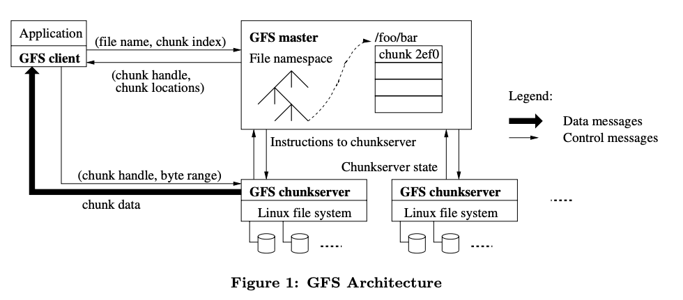
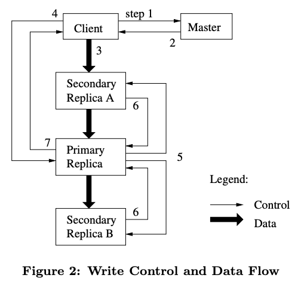

本文主要是对于GFS论文的一些笔记，并穿插了一些自己的思考。
设计概览
一些假设
GFS在设计时根据观察，总结出了一些他们数据访问的一些特征，根据这些特征做出了以下假设：
- 该文件系统是有很多廉价的商业机器组成的，所以应该认为系统中发生错误是常态。文件系统需要能够进行自我监控并自我恢复。
- 该文件系统存储了适中数量的大型文件，并支持小文件操作（相对少量）。
- 读操作的特征：大型流式读取和小型随机读取。应该避免小范围来回随机反复访问。
- 写操作的特征：大型顺序写，即append操作。
- 需要高效实现并发写操作。
- 需要大量的可持续的带宽。
接口
文件是由层次化的文件路径来定位。
GFS提供create、delete、open、close、read、和write接口。
另外，提供snapshot和record append操作。前者提供高效拷贝一个文件或者一个文件夹的功能。record append操作允许多个客户端并发对同一个文件进行，在无需加锁的情况下每个操作保证原子性。
架构
一个GFS集群是包含一个master和多个chunkserver的主从架构。
文件会被切分为固定大小（64MB）的chunk后存储到chunkserver上。每个chunk在创建的时候会由master指定全局唯一不可变的64位整数chunk handle作为id。
在每个chunkserver上是以普通linux文件的形式存储的chunk。可以通过声明chunk handle以及要访问的字节范围来进行读取或者修改chunk。
默认情况下，每个chunk会存储三份副本。但是用户可以自定义副本数量。
master的存储了整个文件系统的元信息，包括：
- 访问控制信息。（内存）
- 映射关系表：文件路径 ⇒ chunk handle（内存）
- 映射关系表：chunk handle ⇒ 储存该
chunk的chunkserver列表。（内存） - 各个
chunkserver的位置信息。（内存） - 选中为
primary的chunk的lease信息，比如过期时间。（磁盘） - 各个
chunk的version number信息。（磁盘） - 等等。
master会周期性的和chunkserver通过心跳包进行通信检测。
master只负责为客户端的请求提供文件元信息，客户端获得原信息后，真正的I/O操作是客户端和chunkserver之间进行的，master不参与。
客户端并没有提供对文件内容的缓存功能，因为读写操作都是大数据量，所以缓存并不能帮助多少，却增加了实现的难度，因为需要考虑缓存一致性问题，得不偿失。
但是客户端会缓存关于文件的元信息，以此避免频繁的叨扰master。
single master
为了不让master成为读写的瓶颈，所以master尽量少的参与读写的过程，所有读写的数据流都不经过master。
以简单第一个读操作为例：
- 客户端声明想要访问的文件名称，和字节偏移量，然后通过偏移量除以64MB得到chunk的下标。
- 发送以上信息（可能包含多个chunk）给master后，master会回复相应的chunk handle以及对应的副本的位置。
- 客户端缓存这些元信息后，会从其中选择最近（文章中通过IP地址选择）的一个副本发起读请求，请求包含chunk handle和字节范围。
Chunk大小
Chunk的大小固定为64MB。
一个较大的chunk大小的优势：
- 减少客户端与master的通讯次数。
- 客户端很大可能会对同一个块进行多次操作，故可以通过建立长连接，减少网络开销。
- 让元信息更少，减少master的存储压力。
较大的chunk大小的缺点：
- 如果有多个客户端访问某个小文件，小文件的chunk会变成访问热点（概率问题）。
比如一个小型可执行文件写入GFS，然后想要在多台机器上同时执行，那么组成该文件的chunk就会瞬间成为访问热点。
该问题可以通过增加相应文件的备份数量来解决，或者通过类似消息队列来削峰请求。
长远的解决方案可以考虑让客户端从另一个客户端读取文件内容。
元信息
master会通过operation log的方式在磁盘上存储对元信息的变更记录。但是并不会存储chunkserver的位置，这个信息是在每次master启动的时候向chunkserver询问的。
master会周期性的扫描内存内的元信息以此实现：
- 垃圾回收。
- 某个chunkserver宕机后的进行重备份。
- 对chunk进行迁移达到平衡负载。

master并不持久化chunkserver和文件之间的映射关系，而是不断轮训chunkserver来保持最新数据。
master不持久化chunkserver的位置信息，因为这样会让实现上要考虑频繁节点的退出，加入，重启，改名等等，太过复杂，得不偿失。
所以关于文件存储的元信息以chunkserver上的最新信息为准，master不进行额外持久化存储。
对于元信息的更改请求，比如对文件、chunk的信息的更改会先在当前master的磁盘以及远程的master副本的磁盘中成功落盘后，才会响应客户端请求。为了避免频繁刷盘，master会批量进行。
master通过重放日志的形式进行恢复。为了不让恢复时间较长，master会定期设置检查点（checkpoint），这样从日志恢复的过程能够从最近的一个检查点开始，大大减少恢复耗时。检查点是一个紧凑的B树形态的结构，能够直接载入到内存中。
因为创建检查点的过程耗时较长，为了不影响master接受请求，master会先切换到一个新的log文件，然后创建一个新的线程来构建检查点。这个创建的检查点会包含在切换log文件前的所有变动。
一致性模型
GFS采用的是一种弱一致性模型。master通过加锁来保证正确性和原子性，且根据写入log的顺序为准来定义全局的操作顺序。
在修改操作之后，如果读者不论在哪个服务器上进行读取，都看到的是相同的数据，那么我们称之为一致的，即consistant。如果一个文件所有客户端都还能看到所有的更改操作的结果，那么我们称之为defined。
在一系列的成功修改操作之后，GFS保证被修改的文件区域为defined：
- 对所有副本按照相同的顺序执行对chunk的修改操作。
- 通过chunk版本号来检测，那些因为宕机而错过某些修改操作的过期的chunk。这些过期的块不会再接受新的修改操作，或者返回给用户。他们会很快被垃圾回收掉。
对于那些缓存了过期chunk location的客户端，在读到比预期早的EOF后会再次向master索要一个最新的chunk。
因为长期的运行，难免会存在数据受损的情况，GFS通过周期性利用校验和来检测这种情况。一旦发现错误，master会很快利用其他正确的副本来修复受损的数据。
为了适应这种弱一致性，客户端需要做一些适配：
- 更多的依赖append，而不是随机写。
- 检查点。
- 写入自验证，自标识的数据。即在数据中加入校验和和id。
- 如果读到了padding（通过校验和来鉴别），丢弃。
- 如果读到了重复的记录（通过校验和来鉴别），那么用数据中写入的唯一id，来进行过滤。
系统交互
leases和修改顺序
对某个chunk的修改操作会对该chunk所有的副本进行。为了避免在并发操作的情况下，因为各个副本收到的请求的顺序不同，而导致不一致，GFS通过以下措施避免：
- 客户端发起写入请求给master，指明要操作的文件的路径，以及偏移量。
- master确定副本所在位置，并且选择其中一个副本设置为primary，该身份默认有60秒有效期。master向客户端返回相应chunk副本的信息：包含哪个是primary，哪些是seconary的身份信息。客户端缓存收到的信息。除非primary不再接受服务或已经无法访问，客户端在缓存过期前不会再叨扰master。
- 接下来就是将数据传输到所有的副本服务器上。为了充分利用每台服务器的上行和下行带宽，客户端会先选择最近的一个副本服务器发送数据，在收到部分数据后该副本服务器会立刻选择离他最近的一个副本服务器进行转发，如此往复流水线工作。所有的服务器收到数据后会先将数据放到内部的LRU缓冲区。
- 当所有的副本服务器都收到了数据，客户端发送一个写请求给primary，该请求中会指明之前发送的数据集。而primary会将这些可能来自多个客户端的写请求定序，然后先在本机执行。
- 在本机执行成后，primary会转发写请求到所有的seconary节点，所有的secondary节点在收到请求后会按照相同的顺序去执行请求。
- 所有的secondary执行结束之后会向parimary返回执行结果。
- 如果所有的secondary都成功执行，那么primary会向客户端返回执行成功。如果在这个过程中有执行错误的情况发生（部分机器成功，部分失败），那么会向客户端返回操作失败，客户端会自动重新发送请求进行重试（3-7步）。再次失败几次后，最后会回退到步骤1重试。

对于那些试图修改跨越多个chunk边界的请求，客户端会自动将他们拆分为多个请求，让每个请求只修改一个chunk。
原子的record append操作
根据描述，我认为该操作的接口应该是这样的：
bool record_append(string filename);
该接口会导致数据在副本间的不一致，但是在该系统的下能够很好的工作。
该接口的操作流程大致和3.1描述的流程相似。不同的是一些细节：
- primary在收到请求后，会先判断本次append请求是否会导致当前chunk超出64MB。如果是，那么它会直接将该chunk进行padding到64MB。然后让所有secondary一起这样做，然后通知客户端对下一个chunk重发一次请求。（单次append操作的大小限制在16MB以内）。
- 如果本次append不会超过限制，那么primary会先在自己本地写入，然后让所有的seconary在相同的文件位置也写入。
成功执行的append接口，只能保证数据至少会被每个chunkserver成功原子的执行一次（因为可能因为重试而多次执行）。
Snopshot快照
根据描述，我认为该操作的接口应该是这样的：
bool snapshot(string srcpath, string tgtpath);
该接口是用来对某个文件或者目录结构，在尽可能减少其他任何进行中的修改的情况下，做一个拷贝。
当master收到snapshot请求的时候，会收回目标文件对应块的所有的lease，这样就可以保证快照时无写操作。
当所有的对应的lease都已经被收回或者过期，那么mater会通过WAL先记录操作，然后在内存中复制对应文件的元信息，新的元信息和老的元信息会先共享相同的chunk，后面对chunk的修改操作会通过使用引用计数，write-on-copy来进行，一般拷贝操作会在相同机器上进行，以此来避免网络消耗。
Master操作
namespace管理和加锁
和传统的文件系统不同，GFS不能通过父目录的内容直接得到其所有的子文件（目录），而为了得到某个目录下的所有的子文件只能通过路径前缀匹配来做。
每个目录或者文件都有一个懒加载的读写锁（并且用完即删）。每个master的操作都会先获取一系列的锁，比如对于文件/d1/d2/d3/f的写操作会对/d1，/d1/d2和/d1/d2/d3加上读锁，对/d1/d2/d3/f加上写锁。正是因为前面所说的，父目录不记录子文件信息，的特性，所以这里写操作不用对父目录进行加写锁，加读锁已经足够保护父目录不被删除，重命名或者快照。
这种加锁的方式能够让GFS在同一目录下进行并发操作。
通过规定获取锁的顺序，来避免死锁。
副本放置
副本放置策略主要为了达到两个目标：最大提高数据可靠性，可用性，以及，最大提高网络带宽利用率。
所以GFS会尽量将副本放置在不同的机架上，但是这也会让写入请求需要转发到多个机架上。
Creation, Re-replication, Rebalancing
一个chunk只可能因为如下三个原因被创建：
- chunk的新建。
- 重备份。
- 重平衡。
当master要创建一个新的chunk的时候，主要有以下考虑：
- 希望新的副本能够创建在一个磁盘空间利用率低于集群平均利用率的机器上。
- 限制目标机器短期内的创建操作数量，以为往往创建操作之后紧跟的是就是大量的写入请求。
- 尽可能将副本分散在不同的机架上。
master会在某个chunk的副本数低于配置要求后，立即进行重备份。会导致这种情况发生的原因有：
- 一个副本服务器下线。
- 某个副本服务器上的某个chunk数据损坏。或者该chunk所在的磁盘坏了。
- 备份的配置要求提高了。
重备份的优先级根据以下因素确定：
- 离目标副本数差的越远的越先进行重备份。
- 优先重备份那些没有被删除的文件。
- 优先备份那些不会阻塞对客户端服务的chunk。
重备份的位置的选择的考虑因素类似的有：
- 将集群磁盘利用率平均化。
- 限制同一chunkserver上活跃的拷贝操作数量。
- 控制副本分散在不同的机架上。
另外每个chunkserver会通过限制，向源chunk所在chunkserver发送读请求的频率，来限制其上进行的拷贝操作的带宽。
对于master的重平衡，master会周期的进行。
- 检查当前副本分布情况，并将副本移到更好的磁盘空间上。
- 通过这种方式能够将新增的chunkserver慢慢的填充上数据，而不是瞬间大量的拷贝，因为大量拷贝很可能会导致接下来的大量的写入请求。
- 会优先选择那些剩余磁盘空间低于平均的chunkserver上的chunk进行删除，然后移动到新的位置。
垃圾回收
GFS对于删除操作的空间回收操作是惰性执行的。
master收到删除请求后：
- WAL
- 将文件名改成一个包含删除时间戳的隐藏文件名。
- 在master的周期性扫描中，如果发现有某个隐藏文件名的文件存在已经超过3天（时间可配置）了，则进行实质删除。
- 在实质删除前，客户端还是可以用新的隐藏文件名进行读取操作，或者恢复这些被删除的文件。
在周期扫描中，还会清理那些orphaned chunks（比如没有任何文件引用的chunk）的元信息。至于回收磁盘空间，因为master和chunkserver之间的心跳包中会包含每个chunkserver上存储的chunk的一个子集。master则会回复那些在master的记录中不存在的chunk的信息，之后chunkserver就可以删除这些chunk了。
下面是关于GC和直接删除相比的优势：
- 因为每次操作都有可能发生错误。发送的每条指令都可能丢失。所以实时的处理错误很复杂。通过GC是一个简单的方式处理所有的错误。
- GC可以和日常扫描任务一起实现，故代价可以被分摊。
- master可以选择在空闲的时间进行GC。
- 避免误删，给了用户反悔的时间。
在特殊情形下，比如磁盘空间紧张，为了加速空间回收的过程，用户可以通过再次尝试删除同一个文件来加速空间回收过程。
过期副本检测
当一个chunkserver宕机过，那么可能会漏掉一些修改操作，那么当该chunkserver再次上线，上面存储的chunk将有可能已经是过期的了。
为了甄别过期chunk，master维护了一个chunk version number。
当master为一个chunk赋予一个lease的时候，会将该chunk的版本号增加一。master和存储该chunk的副本服务器都会在磁盘上存储该版本号。这个版本号变更的过程是在客户端进行实质写入操作之前通知到客户端。
如果某个服务器在宕机后又重新上线，会向master报告自己所存储的chunk以及对应的版本号，这样master就能检测到过期的副本。
master会在垃圾回收中回收这些过期的块。
另外为了保证客户端不读写到过期的信息，master在客户端询问chunk所在副本服务器的阶段时，就会返回该chunk对应的版本号，然后客户端或者副本服务器就可以通过这个版本号来验证，保证客户端不会访问到过期的数据。
容错以及诊断
高可用性
为保证整个系统的高可用性，主要依靠两个机制：快恢复fast recovery以及块备份chunk replication。
对于快恢复：master和副本服务器都可以在宕机后几秒内重启并恢复。并且客户端方面如果请求超时了会进行重试。
对于文件块的备份技术，已经在前面讨论过了。这里讨论master的备份。
为了可靠性，master的状态也会被备份。master的日志和检查点信息会被备份到多台机器上。一个操作真正被执行之前，日志会被写入本地以及到多台副本的磁盘上。
为了简化，GFS让一个master进程管理所有的变更以及后台任务。所以在该master退出之后，能够很快的被重启。如果整个机器或者磁盘损坏了，那么通过外部的监控程序，能够很快在另一个master副本上启动一个master进程。
为了不影响客户端，客户端使用类似域名一样的名称，当master变更了机器，可以通过修改域名解析来让客户端无感切换。
非primary master和primary master之间往往有一些延迟，故一般会提供一些对不被活跃修改的文件的读取服务，或者允许让那些时效性不敏感的应用访问读取。因为master中存在延迟的只有元信息部分。
master的副本（shadow master）会重放primary master上的请求到自己上面，并且在启动的时候轮训所有的副本服务器来定位chunk副本，并且在之后通过握手消息来监控他们的状态。master副本仅仅需要从primary master获取副本位置更新，比如创建或者删除了某个副本。
数据完整性
因为前面讨论的append操作的错误重试机制可能会让文件在不同的服务器上不一样，所以对于文件完整性的验证只能在每个副本服务器上独立进行。所以每个副本服务器会各自的维护一份校验和。
一个chunk会被拆分成64KB大小的block，每个block都会有一个相应的32位的校验和。和其他的元信息相同，校验和和操作日志一样在内存和硬盘中存储，但是和用户数据区分存储。
对于读操作，副本服务器会在回复请求数据前，验证涉及到的block的数据完整性，以此保证不会传播错误的数据。如果校验结果为数据损坏了，那么会返回一个错误并且向master报告。在收到错误后，请求者会向别的副本进行请求，而master会着手从存有正确的副本服务器克隆一份新的chunk，并在新chunk就绪后要求删除原来的损坏chunk。
附录：阅读过程的问题
如果在mater指定一个replica为primary之后，primary和所有secondary增加了version number之后，mater在增加自己的version number之前宕机了，怎么办？
这样的情况下master的版本号会落后于其他副本服务器，在重启后，通过周期性的询问，如果发现收到比自己存的version number要大的回复，那么他会选用接收更大的那个version number。
如果在master选完primary之后，可能因为网络分区之类的原因导致primary不再回复master心跳包，这时候master会怎么办？
master会指定一个新的primary，但是如果是立刻执行一个新的primary的话，因为客户端存在缓存，那么对于一个trunk可能会同时存在两个在接受写服务的primary了，这会导致数据产生不一致。所以master在执行一个新的primary之前，会先等一段时间，等待之前那个lease过期之后，再指定一个新的primary，这样保证同时只能存在一个primary。
对于append record的操作，如果某些secondary节点没有append成功怎么办？
如果有至少一个secondary节点返回了执行失败，那么primary会返回给客户端执行错误，然后客户端会再次发起一次请求。
对于因为错误而重发的append请求，对于在上一次请求中成功append的那些secondary节点的话，不就重复append了数据了吗，这样节点间的数据不一致了吗？会不会造成trunk数据大小不一致？
因为对于primary转发的append操作是要求在指定的offset上执行的，而那些因为某些错误导致没有append成功的节点，在接受到重发的请求后，会先用padding占位到请求要求的offset处，然后再执行append操作。所以GFS是允许trunk的副本间存在不一致的数据的。
如果client在重发请求之前宕机了，再也没能重发出请求，怎么办？
那么意味着之前失败请求造成的数据不一致性无法再被修复。所以应该是没办法解决的？只能要求client在append请求没有回复success之前，对涉及该请求的数据的读取都不能信任。
对于这些不一致的数据，客户端在读取的时候，如果分辨？
对于padding，就直接忽略去读另一块就好了。对于有数据错误的块，通过校验和来甄别。对于，有重复数据的块，通过筛选来去重（通过在数据头部中加唯一标识）。对顺序比较敏感的程序可以通过在数据中写入sequnce number之类的单调值来帮助排序。或者干脆不要进行并发append。
为了将GFS改造成一个强一致性的文件系统？可以有哪些优化的点？
- primary可能需要具备能够检测重发请求的能力。
- primary能够具有立即将某个下线节点移除secondary列表。
- 在数据确定成功写入之前不要将数据暴露给客户端。
- 如果在primary给其他secondary发送消息后还未收到回复就宕机了，那么此时可能已经造成了数据的不一致，新上任的primary应该显式启动一个重新同步的过程。
- 所有的读请求要么也都发给primary，因为primary是清楚哪些请求执行成功，哪些没有的。或者也为读请求设计一个lease系统。
GFS是如何判断某个副本是最近的那个？
论文中提到是通过IP地址。所以可以想象当时谷歌应该是将地理位置的较近的两个机器分配了两个很近的IP地址。
- 谷歌还在使用GFS吗？
根据消息说谷歌使用Colossus代替了GFS，提升了master的性能和容错性。